VMware HomeLab – Parte 2 – Instalação VMware ESXi
TutoriaisCompartilhe esse post nas redes sociais...
Olá Homelabers!
Essa é a segunda parte da série VMware HomeLab e vamos realizar a instalação do VMware ESXi em seu servidor.
Relembrando o nosso cenário: Você trabalha em uma empresa de pequeno/médio porte chamada FIRMALABS e seus servidores são antigos, sem garantia e suporte. Foi aprovado pela diretoria um refresh tecnológico e decidido após um estudo pela troca dos servidores físicos e a implantação de um ambiente virtualizado baseado em produtos VMware.
Você já fez a compra dos servidores, assim como de todas as licenças de software necessárias para o projeto. Os servidores foram entregues e agora o projeto começa para valer. Chegou a hora de colocar a mão na massa.
Hoje iremos realizar a instalação do servidor esx0 - que se acordo com nossa arquitetura de laboratório será a base para a instalação do ambiente virtualizado do cenário da FIRMALABS.
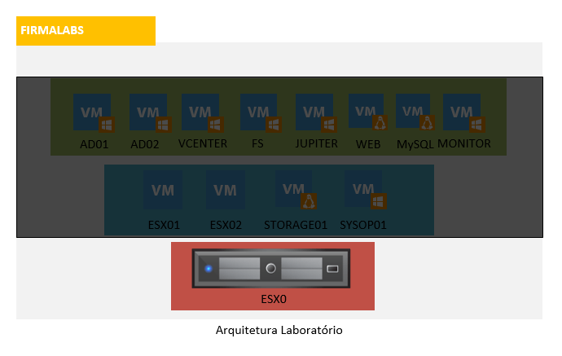
No post anterior, eu indiquei todos os downloads necessários para essa instalação. Caso ainda não tenha feito o seu registro no site da VMware e baixado as ISOs necessárias, volte ao post anterior e depois continue a partir daqui. Então vamos lá!
Pré-requisitos:
* Download do ISO do VMware ESXi 5.5 - veja como realizar o download no site da VMware no[ post anterior](http://homelaber.com.br/vmware-homelab-parte-1-preparativos/)
* Pendrive de no mínimo 8GB para criar o boot e instalar o ESXi - opcionalmente você pode criar um CD de boot com o ISO e instalar o ESXi diretamente no HD, mas eu aconselho fazer a instalação em um pendrive. Para criar um pendrive de boot, siga as instruções desse [post](http://homelaber.com.br/criando-ubs-boot-vmware-exsi-com-rufus/)
* Configurar seu PC para dar boot pelo USB
* Ativar as opções de virtualização na BIOS de seu PC.
[su_note radius="0”]Atenção: Esse PC será utilizado somente para esse fim, ou seja, será o seu servidor VMware. Os dados do HD serão apagados, portanto, faça backup dos seus dados antes de começar esse passo-a-passo. Eu não me responsabilizo por qualquer dano ou perda de dados no seu computador.[/su_note]
O tempo estimado para realização de todas os passos deve ficar entre 20 e 30 minutos.
Passo a passo:
Com o pendrive de boot já criado, faça o boot pelo USB
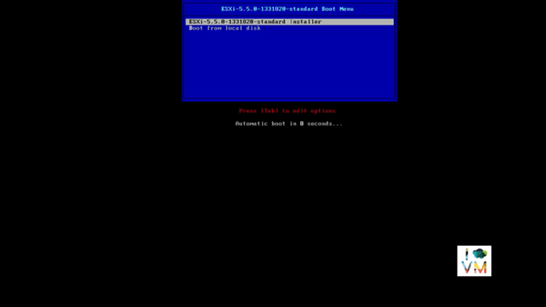
Após o boot você verá a tela a seguir. Escolha a primeira opção para executar o instalador
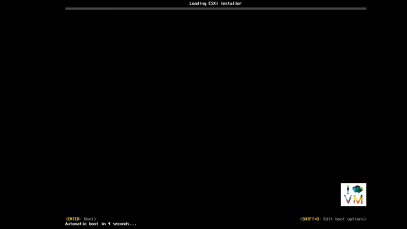
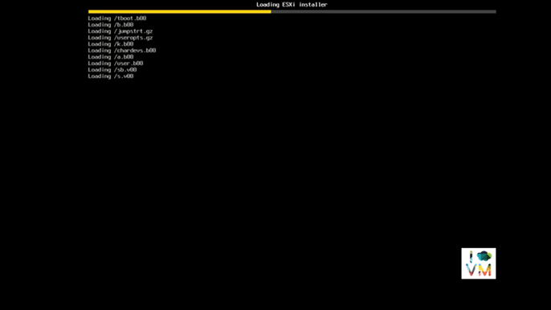
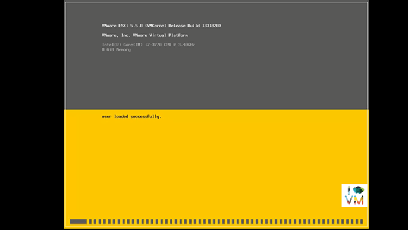
Após o instalador carregar todos os arquivos necessários na memória, a tela inicial do instalador irá aparecer. Pressione ENTER para continuar
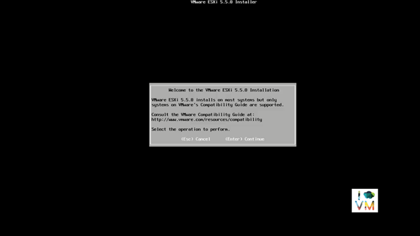
Pressione F11 para aceitar a licença e continuar
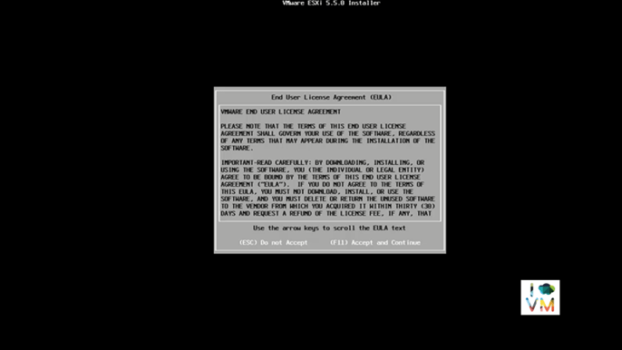
Na próxima tela, você deverá escolher o local de instalação. Escolha o seu Pendrive e pressione ENTER para continuar
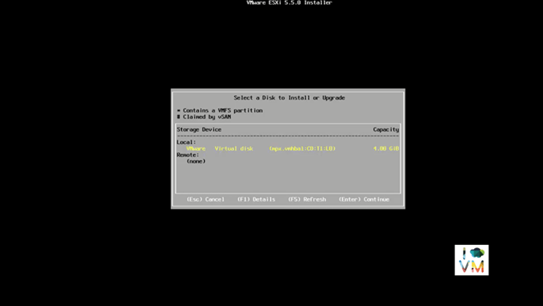
A próxima tela apresenta a escolha do idioma do teclado. Escolha a opção que melhor te atender. Eu sempre costumo escolher US Default. Pressione ENTER para continuar
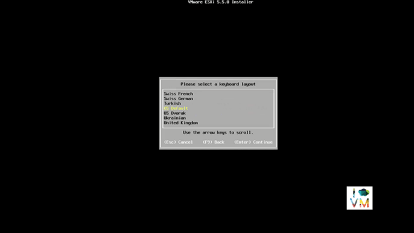
A próxima tela solicita que você informe a senha de ROOT. Escolha uma senha fácil de ser lembrada e anote em algum lugar. Para efeitos de laboratório, vou escolher a senha “install”. Pressione ENTER para continuar.
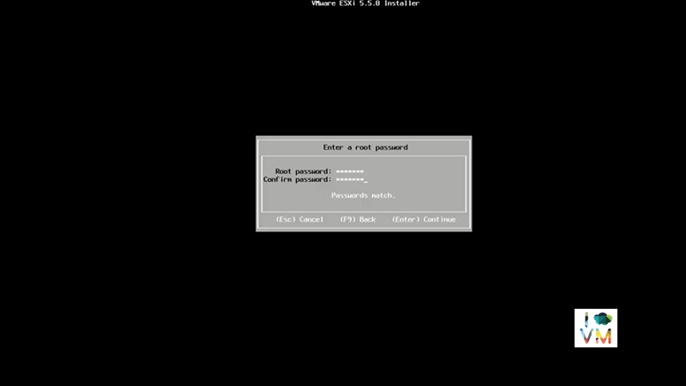
Pressione F11 para confirmar e iniciar a instalação
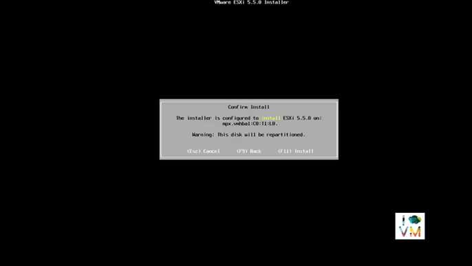
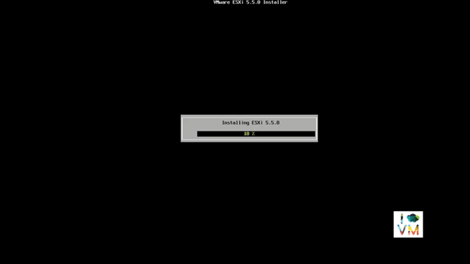
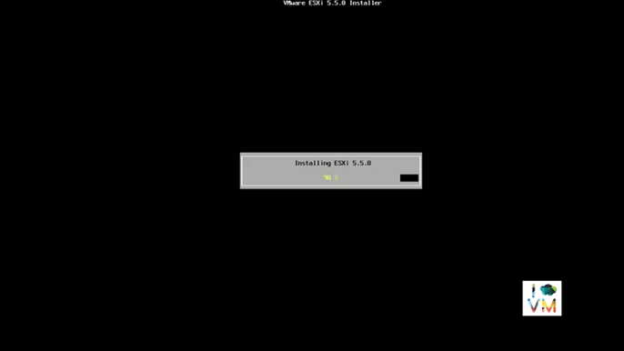
Quando a instalação finalizar, pressione ENTER para reiniciar o servidor.
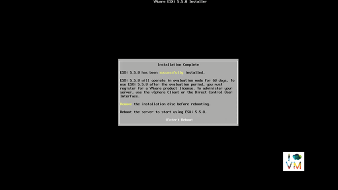
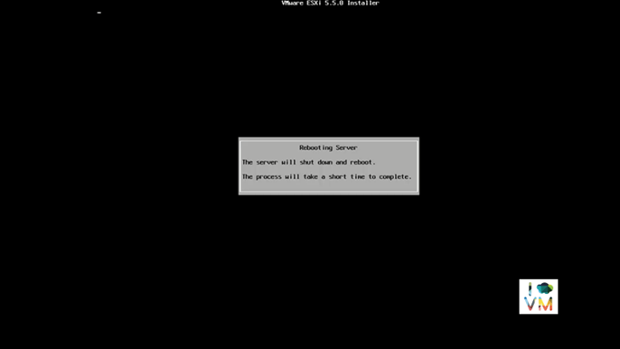
Após o boot, o servidor ESXi irá receber um IP do seu DHCP (no caso de existir um servidor DHPC na sua rede) e está pronto para ser utilizado.
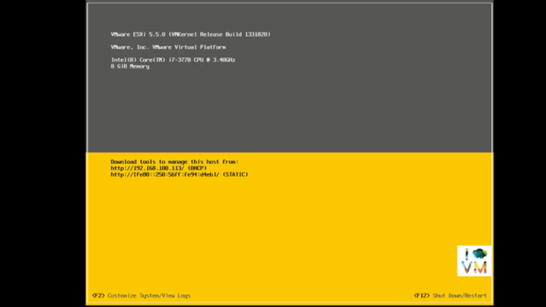
Viu como é fácil? À primeira vista instalar um SERVIDOR de virtualização parece um bixo de sete cabeças.
Agora vamos as configurações:
Pressione F2 e insira o seu usuário e password, no nosso caso “root” | “install”.
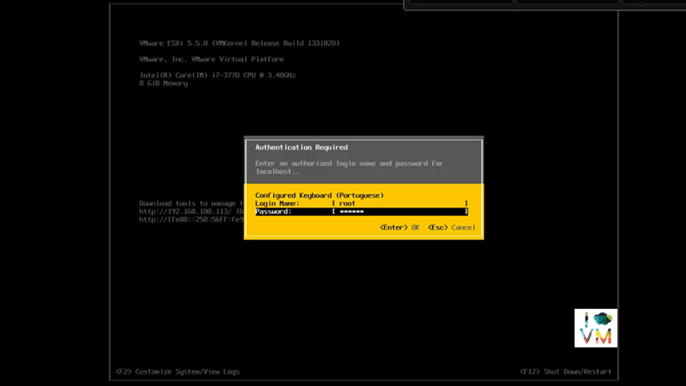
Selecione a opção “Configure Management Network” e pressione ENTER
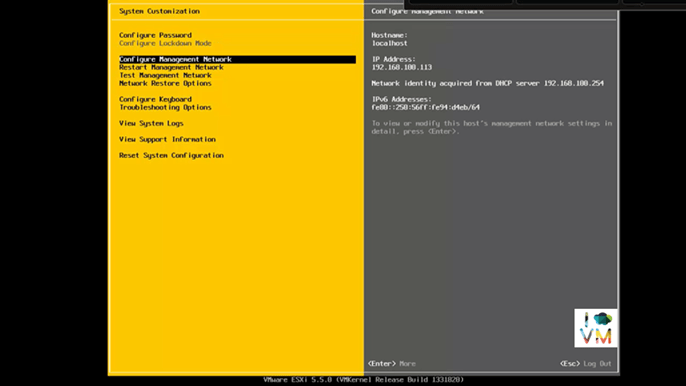
Selecione a sua placa de rede - em nosso caso só temos 1 e pressione ENTER
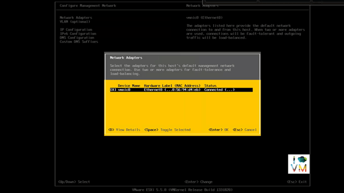
Selecione “Network Adapters” e pressione ENTER
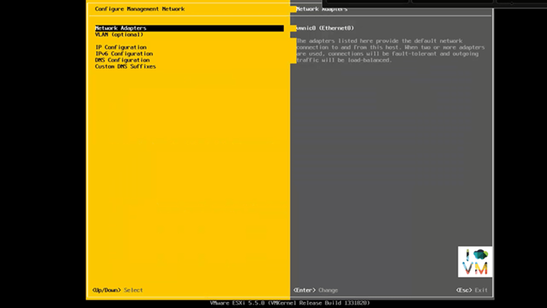
Nessa tela você deverá realizar as configurações de IP. Marque a opção “Set static IP address and network configuration:”
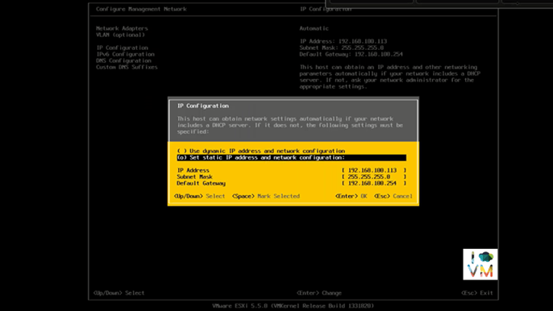
Escolha um IP livre na sua rede e preencha os campos IP Address, Subnet Mask e Default Gateway. Pressione ENTER para confirmar e voltar a tela anterior.
Selecione “DNS Configuration” e pressione ENTER.
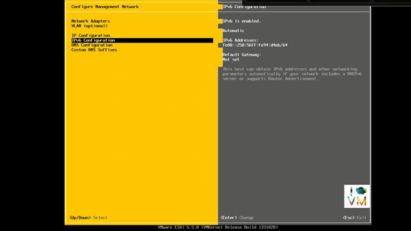
Selecione a opção “Use the following DNS server address and hostname:” e preencha os campos com o IP de seus servidores DNS e escolha um nome para o seu servidor. Vou utilizar “ESX0”, você pode escolher o nome que quiser. Pressione ENTER para confirmar.
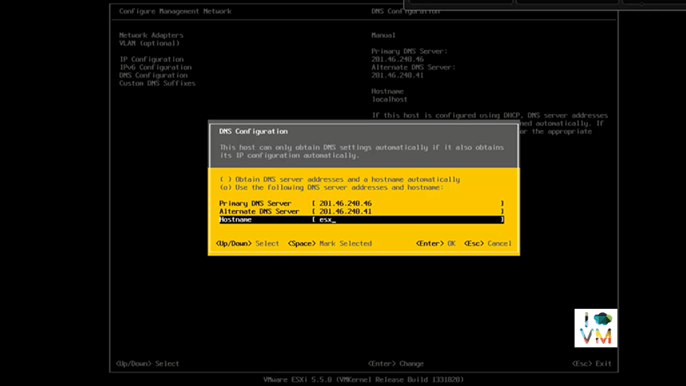
Na próxima tela, pressione Y (yes) para aplicar as alterações e reiniciar o servidor.
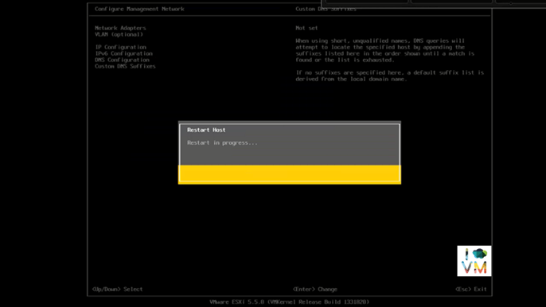
Após o boot, você verá que ele já assumiu as novas configurações de IP. Faltam agora somente mais alguns passos e finalizaremos a instalação.
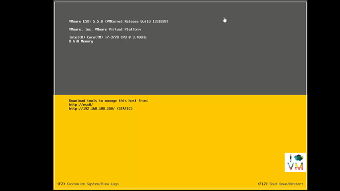
Pronto. O seu servidor ESXi está instalado e configurado. O acesso ao servidor será feito remotamente via o vSphere Client.
Vamos agora fazer o download e a instalação do vSphere Client:
Abra o browser e acesse https://ip-do-seu-servidor-esxi/ no nosso caso https://192.168.100.150/
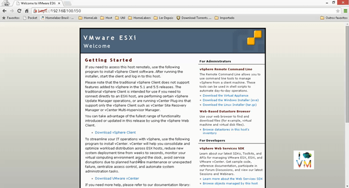
Clique em “Download vSphere Client” e faça o download do arquivo que tem aproximadamente 350MB.
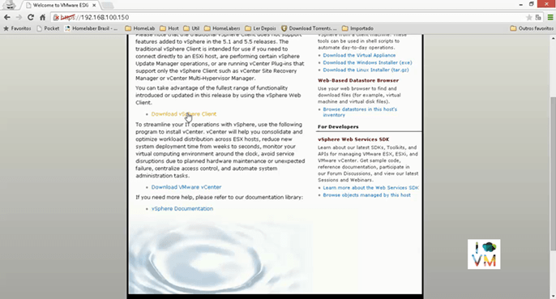
A instalação do vSphere Client é bem simples: aceite todos os defaults e next, next, finish.
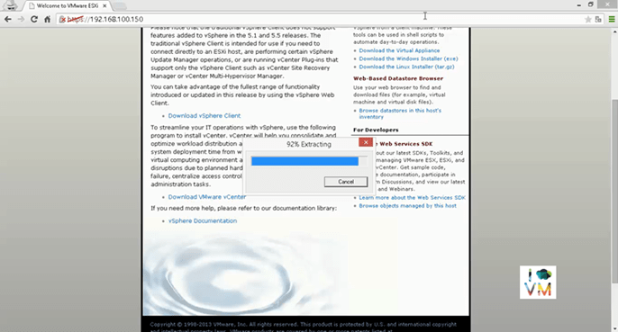
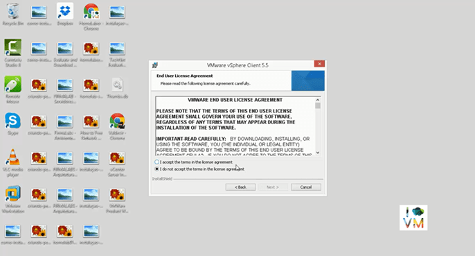
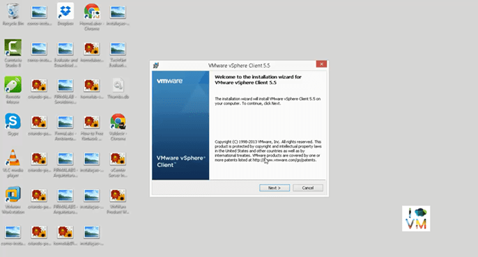
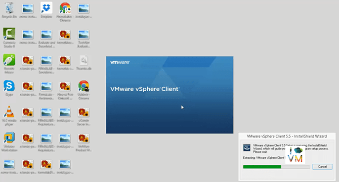
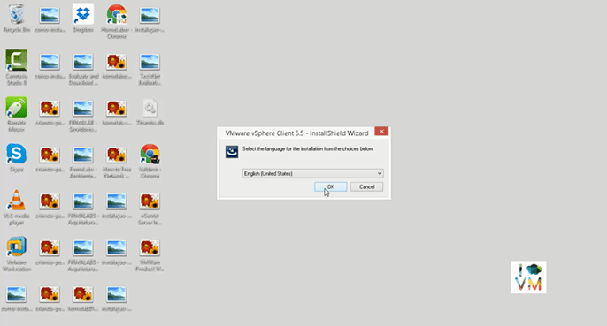
Abra o vSphere Client e coloque as informações de IP, User name e Password do seu servidor ESXi.
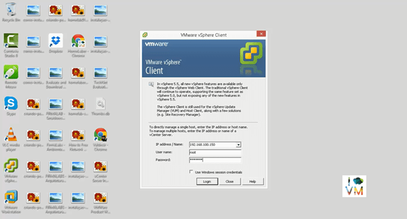
Na tela de aviso de segurança, marque para instalar o certificado e depois clique no botão Ignore.
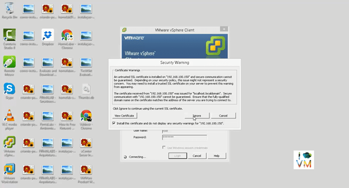
Clique em OK na próxima tela para aceitar a licença de avaliação.
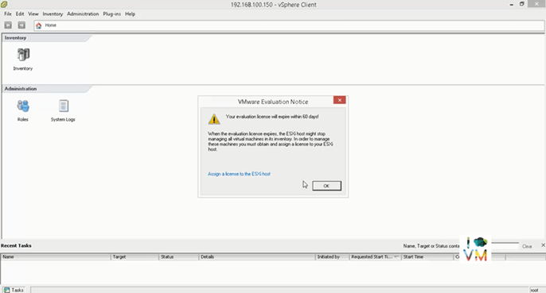
Seja bem-vindo ao seu novo servidor VMware ESXi novinho em folha! :D
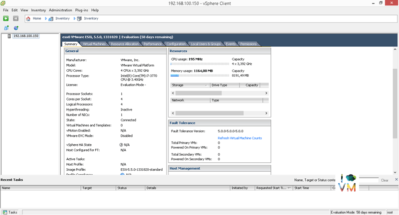
No próximo post, iremos instalar 2 VMs com o ESXi, basicamente repetir os passos acima. Esses serão os hosts do cluster VM da FIRMALABS.
Caso você encontre alguma dificuldade ou dúvidas sobre o que foi apresentado nesse post, não deixe de comentar no post, pois faço questão de te responder a todas as suas dúvidas.
Até o próximo post e não se esqueça de deixar o seu comentário no post, seguir o HomeLaber no Twitter (@Homelaber) e curtir a nossa página no Facebook (fb.com/homelaber) para ficar sempre atualizado das novidades do blog.
Vou deixar aqui alguns links oficiais da VMware onde você poderá se aprofundar nos detalhes da instalação do ESXi.
VMware vSphere 5.5 Documentation Center (em Inglês) pdf para download
Before You Install ESXi (em Inglês)
Compartilhe esse post nas redes sociais...Valdecir Carvalho
Nerd e pai orgulhoso da Mariana e João. Profissional Sênior de TI com foco em arquitetura de infraestrutura e cloud computing. Blogueiro, podcaster, palestrante, amante de comunidades técnicas, fotógrafo aposentado e adora jogos antigos.
#vExpert · #VMUGLeader · #VUGBrasil · #vBronwBagBrasil · #VeeamVanguard